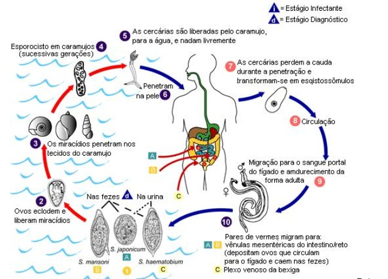
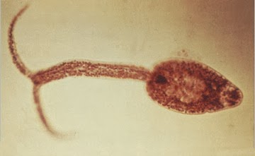

Características Adaptativas

Reino: Animalia
Filo: Platelmintos
Classe: Trematoda
Ordem: Strigeiformes
Família: Schistosomatidae
Gênero: Schistosoma
O parasita S. mansoni, que é mantido no ambiente por caramujos Biomphalaria (Mollusca: Gastropoda: Pulmonata: Planorbidae), é responsável pela doença em sua forma hepática e intestinal na África, Península Arábica e América do Sul.
Adaptações para viver
O parasita S. mansoni tem um ciclo de vida complexo que envolve um hospedeiro intermediário, o molusco aquático do gênero Biomphalaria,
e um hospedeiro definitivo vertebrado (homem, podendo parasitar outros mamíferos). Essa espécie desenvolve sua fase adulta parasitando
a luz dos vasos sanguíneos de seus hospedeiros mamíferos, onde habita preferencialmente as vênulas do plexo hemorroidário superior e
nas ramificações mais finas das veias mesentéricas, principalmente a inferior, local de oviposição das fêmeas.
Características Biológicas

Regulação de água
O sistema excretor dos platelmintos apresenta-se com protonefrídias, que possuem células terminais multiciliadas chamadas de
células-flama (ou solenócitos), responsáveis pela eliminação do excesso de água e os resíduos metabólicos para o exterior do organismo,
por meio de um sistema de canais. Esses seres são amoniotélicos, ou, em outras palavras, excretam amônia.
Locomoção
Locomovem-se através da circulação sanguínea do hospedeiro.
Sistemas do corpo
Sistema respiratório - os platelmintos são desprovidos de sistema respiratório. Nas espécies que vivem livres no ambiente, a
respiração é aeróbica, sendo as trocas realizadas por meio de difusão epitelial, enquanto que nas espécies parasitas, é anaeróbica.
Sistema circulatório - Os platelmintos não possuem sistema circulatório.
Sistema nervoso- O sistema nervoso é geralmente constituído por um par de gânglios anteriores que estão associados a cordões longitudinais.
Comportamento

Hospedeiros
Formas adultas habitam os vasos mesentéricos do hospedeiro definitivo (homem) e as formas intermediárias se desenvolvem em caramujos
gastrópodes aquáticos do gênero Biomphalaria.
Contaminação e prevenção
Transmissão - Ocorre pela penetração das cercárias na pele e na mucosa do hospedeiro humano, especialmente em pés e pernas em contato
com água contaminada. Estão em maior atividade entre 10 e 16 horas, quando o calor é mais acentuado. Podem ser encontrados em valas de
irrigação de horta, pequenos córregos, reservatórios de água, entre outros locais.
Prevenção - Consiste em evitar o contato com águas onde existam os caramujos hospedeiros intermediários infectados. O controle da
esquistossomose é baseado no tratamento coletivo de comunidades de risco, acesso a água potável e saneamento básico e educação em saúde.
Reprodução
Possui ciclo heteroxêmico tendo o caramujo do tipo Biomphalaria glabata como hospedeiro intermediário. Os vermes adultos vivem no sistema porta, local onde os esquistossômulos atigem maturação sexual, de modo que migram para a veia mesentérica superior, se reproduzem sexuadamente e as fêmeas começam a colocar os ovos. Eles ganham o meio externo pelas fezes, de modo que irão eclodir na água e liberar miracídeos quando estimulados por fatores como altas temperaturas, luz intensa e oxigenação da água. Os miracídeos seguem até o hospedeiro intermediário, onde perdem estruturas e se transformam em um saco com a geração das células germinativas, denominado esporocisto.